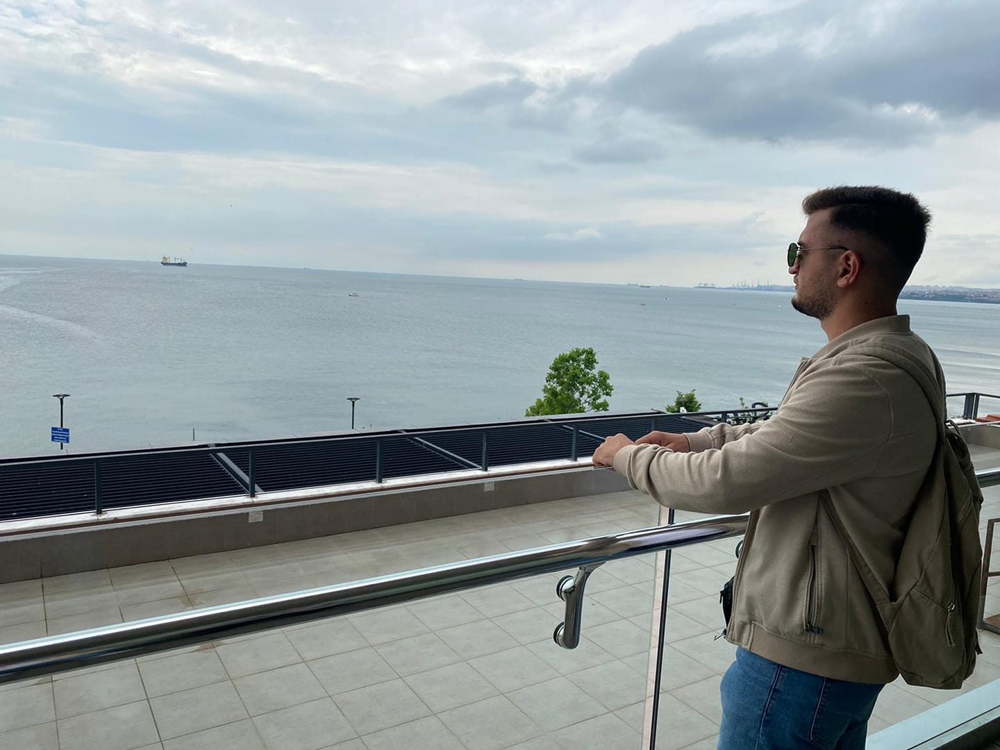

Feti Bakiji, i lindur me 2000 ne Kumanove, Maqedonia e Veriut.
Shkollen fillore dhe te mesme e ka perfunduar ne vendlindje.
Per momentin jam ne kurs te gj.Angleze ne kursin ENGLISHFORLIFE
Punoi te firma ime BF-ADIS
If You Want To Be a Lion You Must Train With Lion.